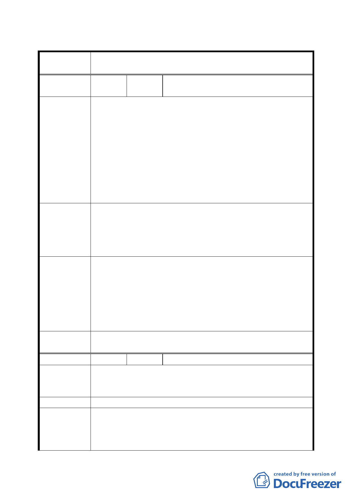

臺北市都市計畫委員會公民或團體所提意見綜理表
案 名 臺北市文山區都市計畫通盤檢討（細部計畫）案
編
號１
陳情人
景行社區發展協會
（09430087300）
王義典
一、 本地區處於聯絡台北縣市之重要門戶，周邊道路系統完
善，又有捷運新店線景美站，並鄰近仙跡岩風景區。近
年來在漢神百貨、愛買商圈與周邊現代商業活動之逐次
發展下，配合其為文山區傳統力使核心之人文景觀及地
陳情理由
方特色，兼具傳統與現代的商業購物遊憩據點。
( 景 美 ) 二、 臺北市政府預計九十五年將完工景美關渡腳踏車道路
網，木柵貓空纜車也將於九十五年底完工，屆時將提供
上山觀光運輸，規劃辦理「仙跡岩」為國際觀光夜間公
園，為配合市政建設，請規劃景美夜市近郊為臺北市國
際觀光休閒運動區。
一、 為振興地方經濟及提升臺北市國際都市地位，建請本社
區景行里原商三區改為商四區，以配合馬市長「健康、
建議辦法
休閒、運動」之理念。
二、 劃定景美夜市及近郊（含仙跡岩、世新大學）為臺北市
國際觀光休閒運動區，以打造本市為國際都市之地位。
一、 關於土地適用分區管制規則之規定，第三種商業
區與第四種商業區之允許使用項目相差無幾，第
專案小組
三種商業區對於本地區之發展已足敷需求，且商
審查結論
三變更為商四（特），並不能增加容積外還涉及
（94.7.4）
回饋，故維持原第三種商業區。
二、 至於景美夜市及近郊地區規劃建議，則移請市府參考辦
理。
委員會議
決議
依專案小組審查結論辦理。
編 號 ２ 陳情人 林添明（09430082800）
陳情理由
（景美）
建議位置：萬隆段一小段 564-1、42-3 地號。
建議理由：
建議廢除 5 米道路，因該道路之劃設，致地主土地無法使用。
建 議 辦 法 建議廢除該 5 米道路。
專案小組
審查結論
（94.11.24）
本案維持原計畫，對於畸零地則由工務局建築管理處依法處
理。
二八